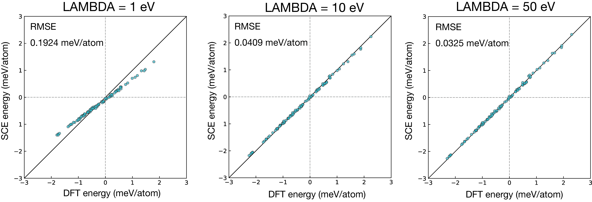

Penalty Term Dependence
In VASP spin-direction-constrained calculations, the penalty parameter LAMBDA must be set to a sufficiently large value to enforce the prescribed spin orientations accurately. Here we demonstrate, using an fcc Ni 2×2×2 cubic supercell (32 atoms), how the quality of the fitted SCE model degrades when LAMBDA is too small.
Spin Configuration Sampling
One hundred spin configurations were generated by sampling from the mean-field Heisenberg distribution at a reduced temperature $\tau = T / T_C^{\mathrm{MFA}} = 0.1$, where $T_C^{\mathrm{MFA}}$ is the Curie temperature in the mean-field approximation. The single-site probability distribution is given by
\[P_i(\hat{\boldsymbol{e}}_i) = \frac{3\mathfrak{m}/\tau}{4\pi \sinh(3\mathfrak{m}/\tau)} \exp\!\left(\frac{3\,\boldsymbol{\mathfrak{m}} \cdot \hat{\boldsymbol{e}}_i}{\tau}\right),\]
where $\boldsymbol{\mathfrak{m}} = \mathfrak{m}\hat{\boldsymbol{e}}$ is the global normalized magnetization vector pointing along $\hat{\boldsymbol{e}}$, and $\hat{\boldsymbol{e}}_i$ is the unit spin direction of atom $i$.
The configurations were generated using the sampling script tools/sampling_mfa.jl. The argument tau specifies the reduced temperature $\tau$:
julia sampling_mfa.jl INCAR tau -s 0.1 -e 0.1 -w 1 -n 100For each value of LAMBDA, a separate VASP calculation was performed on each of these 100 configurations. An SCE model was then fitted to the computed torques, and its accuracy was assessed by comparing predicted and reference energies.
Results
As shown in Fig. 1, a small LAMBDA leads to a noticeable deviation between the predicted and reference energies, indicating that the spin constraint is insufficiently enforced and the resulting torques are unreliable for model fitting. We therefore recommend using a sufficiently large value of LAMBDA.
Note that starting directly with a large LAMBDA often causes SCF convergence difficulties. It is advisable to perform restart calculations, gradually increasing LAMBDA from a small initial value.

Fig. 1: Energy prediction error of the SCE model as a function of LAMBDA. The error decreases and saturates as LAMBDA increases, indicating that a sufficiently large value is required for reliable model fitting.
Computational Details
The calculations were performed with VASP 6.4.1. The base INCAR file used is shown below.
NCORE = 4
ENCUT = 350.0
PREC = accurate
NBANDS = 400
GGA = PE
EDIFF = 3.2E-6
NELM = 200
NELMDL = -5
NELMIN= 7
IMIX = 4
AMIX = 0.1
BMIX = 1.0
AMIX_MAG = 0.1
BMIX_MAG = 1.0
NSW = 0
IBRION = -1
POTIM = 0.10
LMAXMIX = 4
LREAL = .FALSE.
LWAVE = .FALSE.
LCHARG = .TRUE.
LNONCOLLINEAR = .TRUE.
I_CONSTRAINED_M = 4
RWIGS = 1.242
LAMBDA = 1
M_CONSTR = 0 0 1.20 0 0 1.20 0 0 1.20 0 0 1.20 0 0 1.20 0 0 1.20 0 0 1.20 0 0 1.20 0 0 1.20 0 0 1.20 0 0 1.20 0 0 1.20 0 0 1.20 0 0 1.20 0 0 1.20 0 0 1.20 0 0 1.20 0 0 1.20 0 0 1.20 0 0 1.20 0 0 1.20 0 0 1.20 0 0 1.20 0 0 1.20 0 0 1.20 0 0 1.20 0 0 1.20 0 0 1.20 0 0 1.20 0 0 1.20 0 0 1.20 0 0 1.20
MAGMOM = 0 0 1.20 0 0 1.20 0 0 1.20 0 0 1.20 0 0 1.20 0 0 1.20 0 0 1.20 0 0 1.20 0 0 1.20 0 0 1.20 0 0 1.20 0 0 1.20 0 0 1.20 0 0 1.20 0 0 1.20 0 0 1.20 0 0 1.20 0 0 1.20 0 0 1.20 0 0 1.20 0 0 1.20 0 0 1.20 0 0 1.20 0 0 1.20 0 0 1.20 0 0 1.20 0 0 1.20 0 0 1.20 0 0 1.20 0 0 1.20 0 0 1.20 0 0 1.20
ISYM = 0The POSCAR used is:
Ni
3.5158
2 0 0
0 2 0
0 0 2
Ni
32
Direct
0.000000000 0.000000000 0.000000000
0.000000000 0.250000000 0.250000000
0.250000000 0.000000000 0.250000000
0.250000000 0.250000000 0.000000000
0.000000000 0.000000000 0.500000000
0.500000000 0.000000000 0.000000000
0.000000000 0.500000000 0.000000000
0.000000000 0.250000000 0.750000000
0.500000000 0.250000000 0.250000000
0.000000000 0.750000000 0.250000000
0.250000000 0.000000000 0.750000000
0.750000000 0.000000000 0.250000000
0.250000000 0.500000000 0.250000000
0.250000000 0.250000000 0.500000000
0.750000000 0.250000000 0.000000000
0.250000000 0.750000000 0.000000000
0.000000000 0.500000000 0.500000000
0.500000000 0.000000000 0.500000000
0.500000000 0.500000000 0.000000000
0.000000000 0.750000000 0.750000000
0.500000000 0.250000000 0.750000000
0.500000000 0.750000000 0.250000000
0.250000000 0.500000000 0.750000000
0.750000000 0.000000000 0.750000000
0.750000000 0.500000000 0.250000000
0.250000000 0.750000000 0.500000000
0.750000000 0.250000000 0.500000000
0.750000000 0.750000000 0.000000000
0.500000000 0.500000000 0.500000000
0.500000000 0.750000000 0.750000000
0.750000000 0.500000000 0.750000000
0.750000000 0.750000000 0.500000000The KPOINTS used is:
Ni
0
Gamma
4 4 4
0 0 0